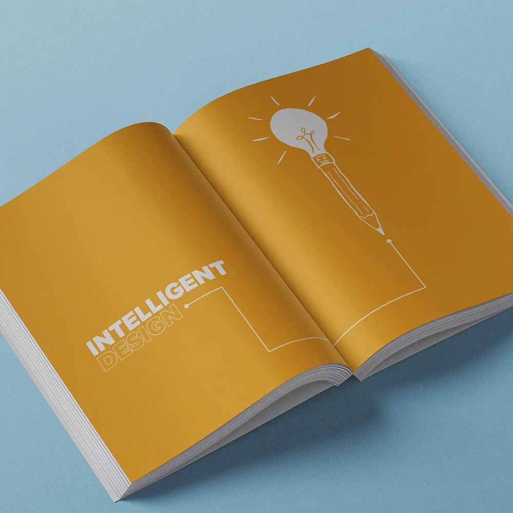
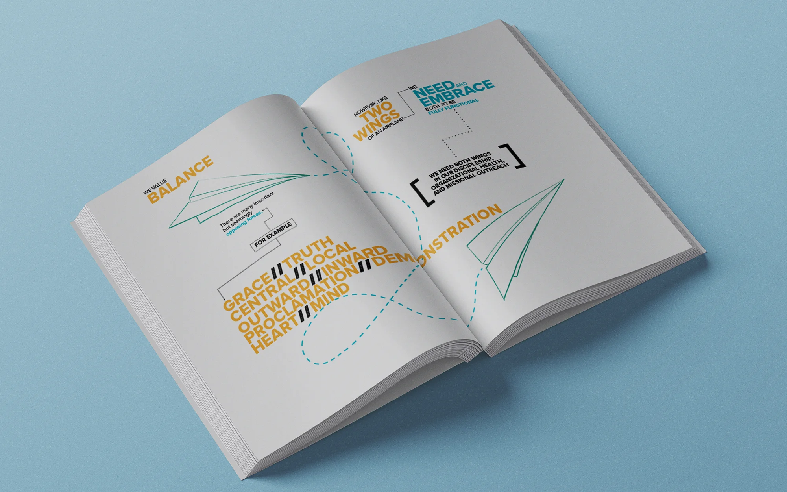
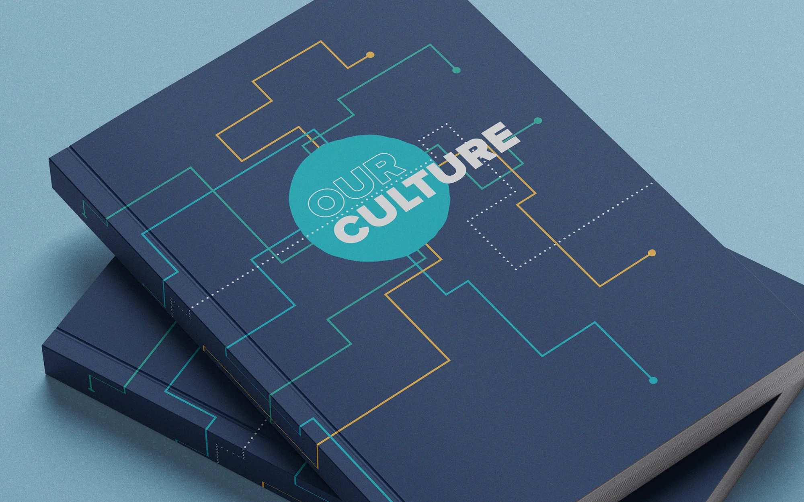
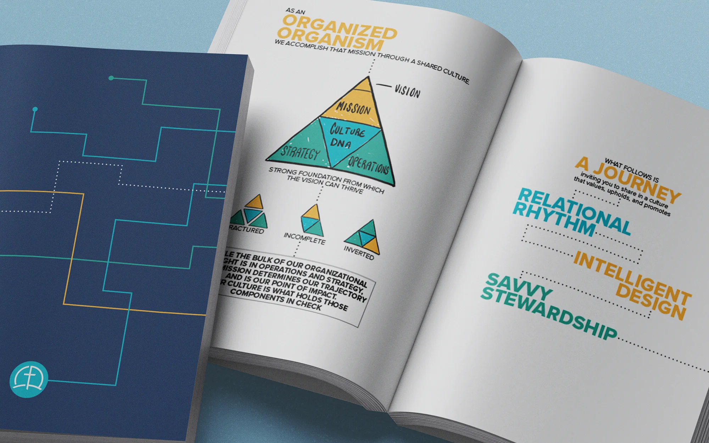
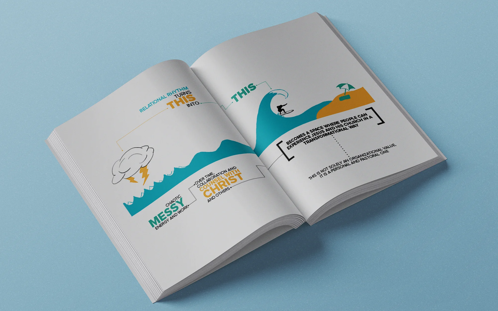
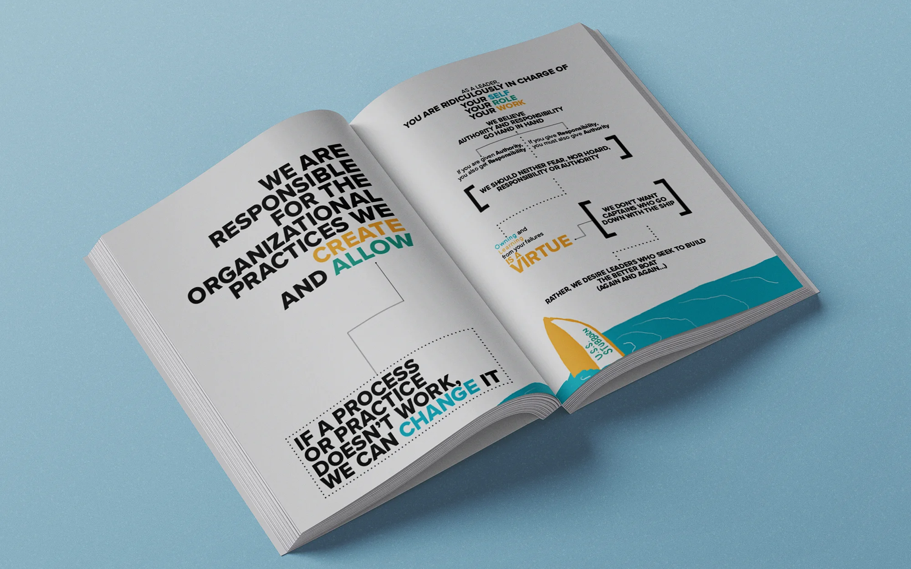
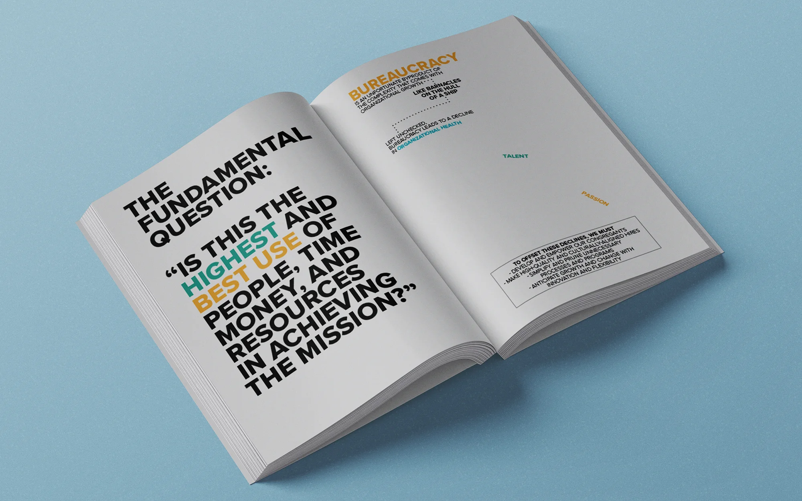

DNA Culture Handbook

The Ask
Growth problems are the ones people typically prefer, but as Forest Hill expanded to six locations with their own staff, unity became an issue — of thought and of culture. Leadership wanted a way for current and future hires to tap into the essence of Forest Hill's identity.
The Result
Developing the DNA notebook, "Our Culture", provided a resource for all staff to consistently reference the type of organization Forest Hill wants to be. Not wanting scale to make staff feel like "cogs in a wheel," leadership often used the term "Organized Organism." This became the guiding philosophy of the project, shaping the content to feel like a peek into someone's sketchbook. Tons of white space and 100 blank pages at the back encouraged it to be an interactive space for notes and reflection.
The content was divided into three parts: Relational Rhythm, Intelligent Design, and Savvy Stewardship. Each part was represented by a color, and a mixture of hand-drawn illustrations and digital "cell" elements captures the feel of an organized organism. The result is a playful, thought-provoking journey that engages the reader far more than your typical employee handbook. Below are selected spreads from the project.






Credits
- Art Direction / Illustration / Layout Design: Jared Hanline
- Cultural content developed by a small team that included Jared